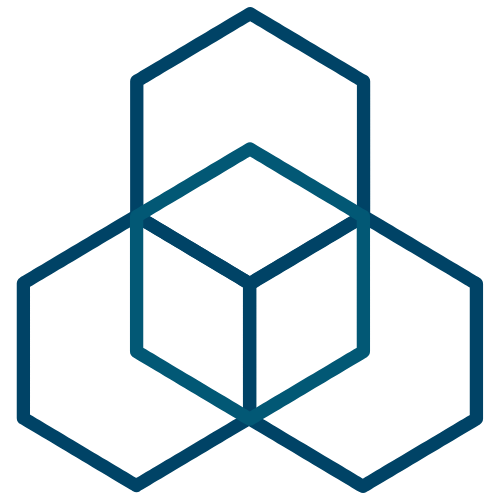
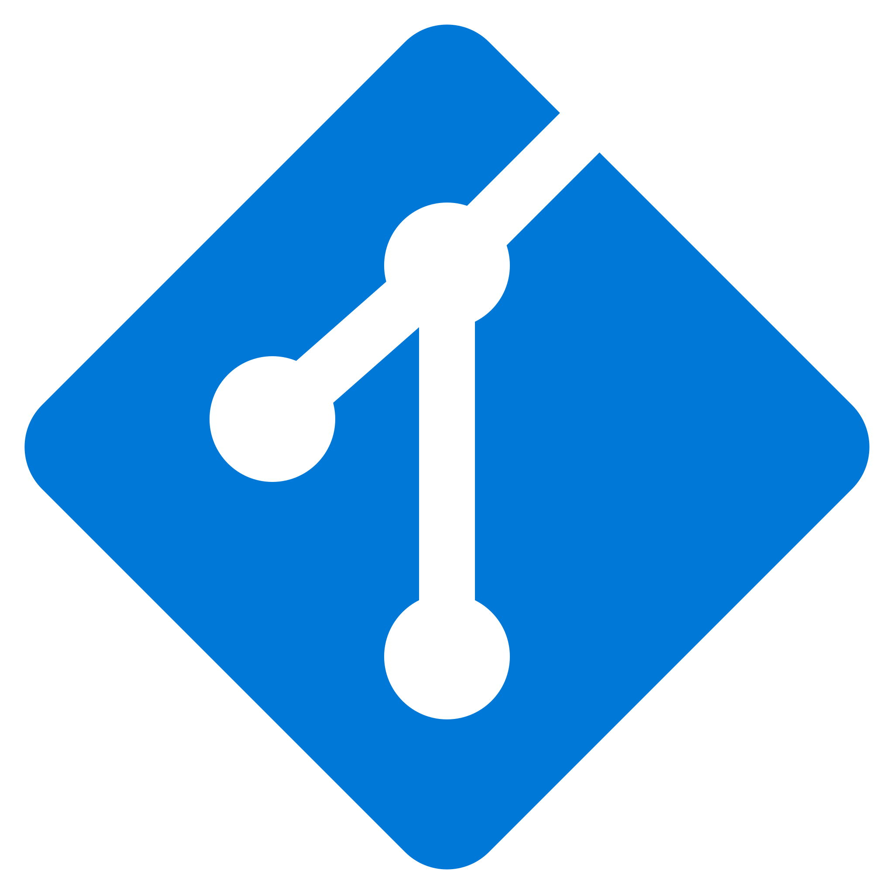

Windows app
SwiftX
Everything you reach for, right where you are. A quick-access orbit for apps, files, folders and links — summoned with a shortcut, a screen corner, or the system tray.
Also by ʞɐ / ajaykontham
The same philosophy as Anchor, applied to a few other things: local-first, no accounts, no telemetry, free and open source.
Floating, dock-style utilities for the desktop — built on the same WinUI 3 foundation as Anchor.
Everything you reach for, right where you are. A quick-access orbit for apps, files, folders and links — summoned with a shortcut, a screen corner, or the system tray.

A floating toolbox for developers. Formats JSON, decodes JWTs, hashes files and masks personal data — all processed locally, nothing leaves your PC.
Focused tools that stay inside the editor, published to both the VS Code Marketplace and Open VSX.

A full-featured Git client for VS Code. Drives the real git binary, with 173 commands and a commit graph.
Encrypts and decrypts MuleSoft secure configuration properties inside VS Code. All cryptography and keys stay local.
Inspects and validates certificates, handles conversion and keystore workflows, and scans for ones about to expire — without leaving VS Code.
A toolkit for VS Code: data formatting, certificate management, and encoding/decoding, all in one place.
Small, single-purpose packages published to npm and PyPI — runnable with npx or uvx.
A remote proxy for Model Context Protocol servers with mutual-TLS (mTLS) client certificate authentication, runnable via npx or uvx.
Extracts every pull request comment, including those from deactivated authors, into a CSV and a local review dashboard.